名詞
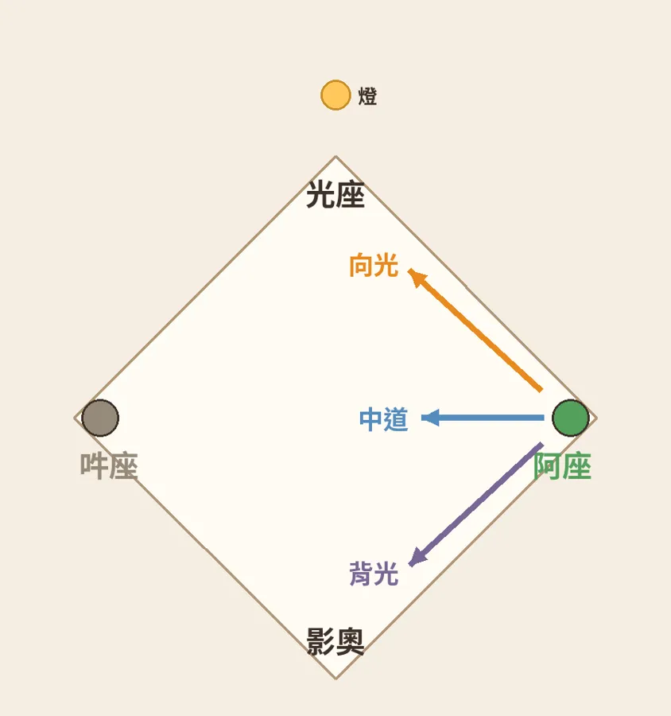
場地的四個角
阿座（あざ）：起始點之一。從光座往場地看，左邊那一角。
吽座（うんざ）：另一個起始點，從光座往場地看，右邊那一角。
光座（こうざ）：放燈的那一角，燈放在它的外側。
影奧（かげおく）：光座對面的角，影子延伸的方向。
開局的三種方向
- 搶先手，主導節奏。
- 自己的影子朝場地中央伸出，弱點暴露在對手面前。
- 靠近邊界，接下來可選的走法變少。
- 四周都有空間，彈性最大。
- 沒有明顯的優勢。
- 影子朝影奧延伸，保護自己的影子弱點。
- 通常是後手，主動權交給對手。
- 靠近邊界，接下來可選的走法變少。
以上是一般的傾向，實際好壞要看對手的位置和規劃。綠色是優點，紅色是缺點。
走法
圖中都以左轉為例，右轉就是左右對稱；名字前面加「左／右」，例如「右十六夜」。綠色是模型，橘色是模板，數字是第幾步。所有圖的比例都一樣，可以直接比較移動距離。
單步
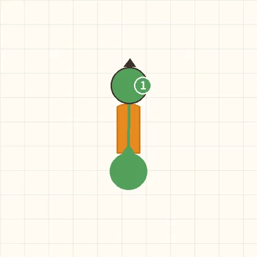
直線一步。
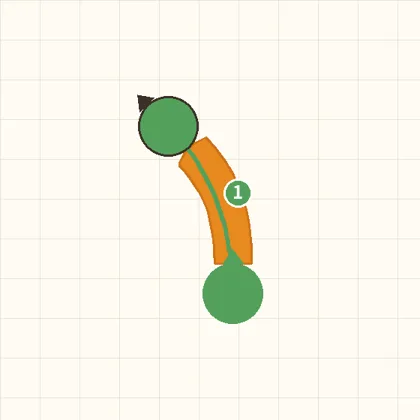
45° 彎道一步（左柳／右柳）。
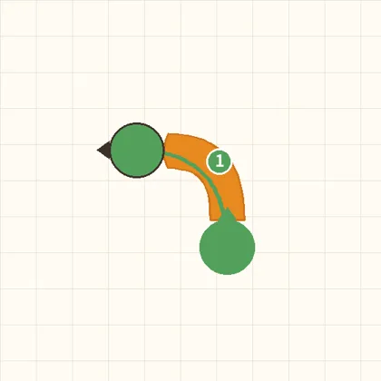
90° 轉彎一步（左曲尺／右曲尺）。
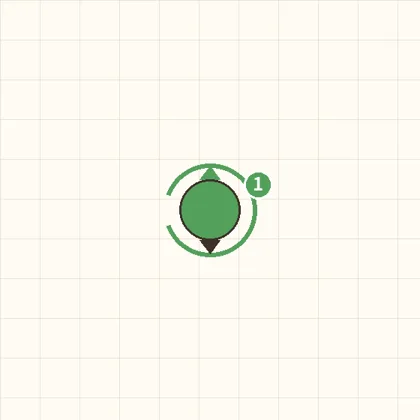
迴轉的第 2 步：原地轉 180°。
兩步組合
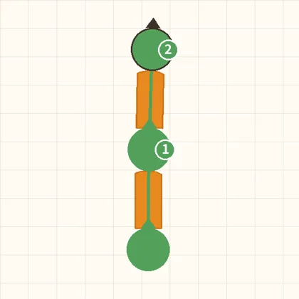
兩步直線。可用終點弧線讓落點偏一側，停在想要的距離。
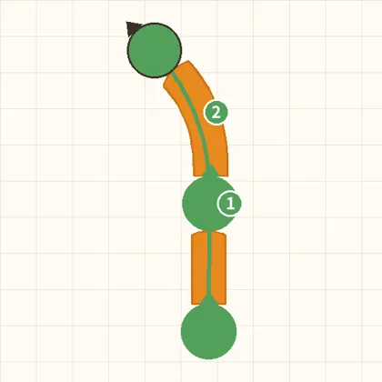
愚直＋柳：先直走，最後輕輕垂下來。
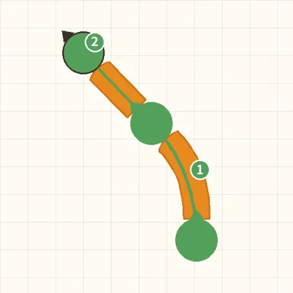
柳＋愚直：先輕輕一彎，再直直往前。
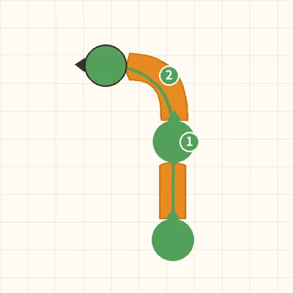
愚直＋曲尺：先直走，再轉一個直角，像和式鑰匙的 L 形。
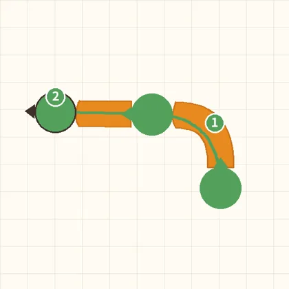
曲尺＋愚直：先轉一個直角，再直直往前。
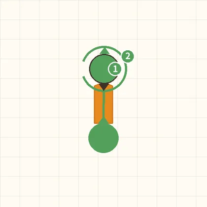
愚直＋轉身：往前一步再轉身（迴轉）。
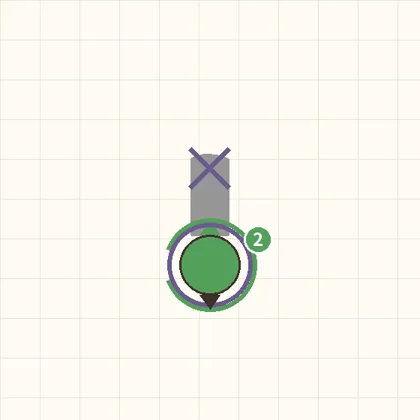
一步轉身的直線用「不動」取消 → 原地轉身。
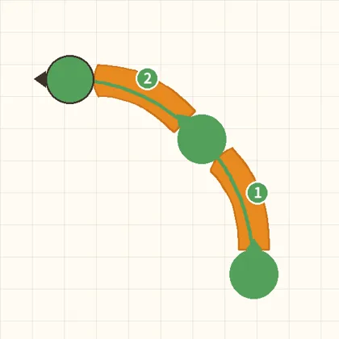
同側柳＋柳：走得最遠的大弧線。
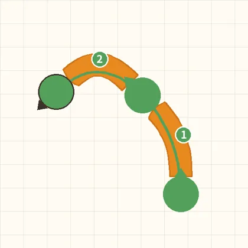
同側柳＋曲尺：先小彎後大彎，越轉越大（滿月前的月亮）。
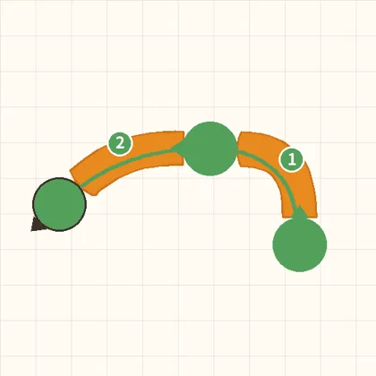
同側曲尺＋柳：先大彎後小彎，越轉越小（滿月後的月亮）。
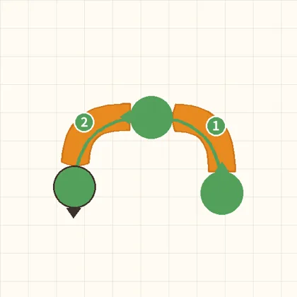
同側曲尺＋曲尺：繞一個半圓，方向翻轉。
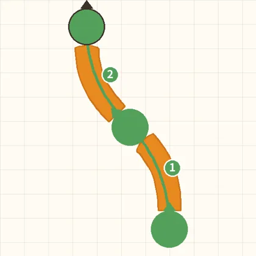
左柳＋右柳（或反過來）：S 形橫移，面向不變。
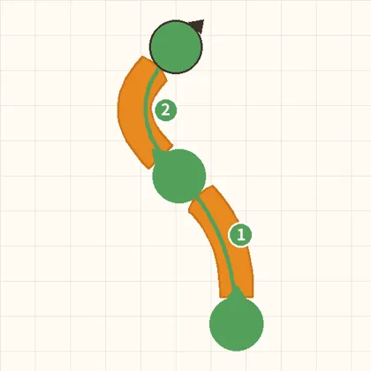
柳＋反向曲尺：先輕輕一彎，再往反方向急轉折回。
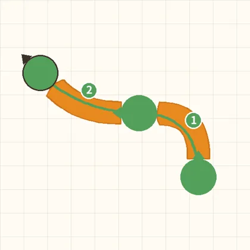
曲尺＋反向柳：先急轉一大彎，再往反方向輕輕修正，大致維持新的前進方向。
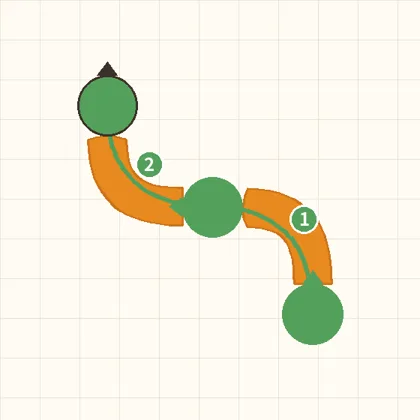
左曲尺＋右曲尺（或反過來）：Z 形大幅橫移，面向不變。
打碁
實際對局的紀錄與講解，可以直接看重播。
打碁一｜守株待影
中道開局 vs 向光開局
兔子以愚直一徹走中道開局，青蛙以右昇龍沿邊向光開局。青蛙取得第 2 回合的先手，但在第 2 回合選擇了一步轉身，讓兔子的十三夜得以成立。
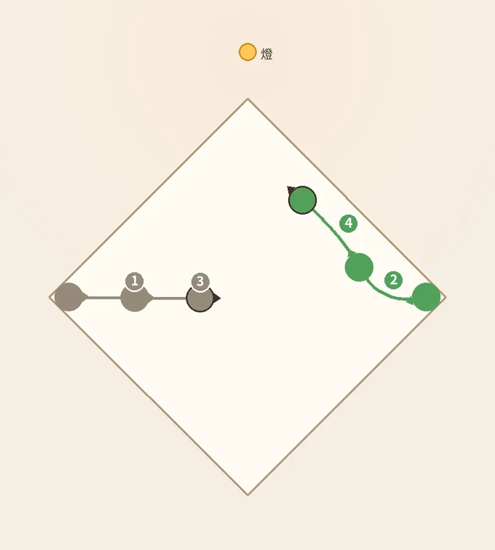
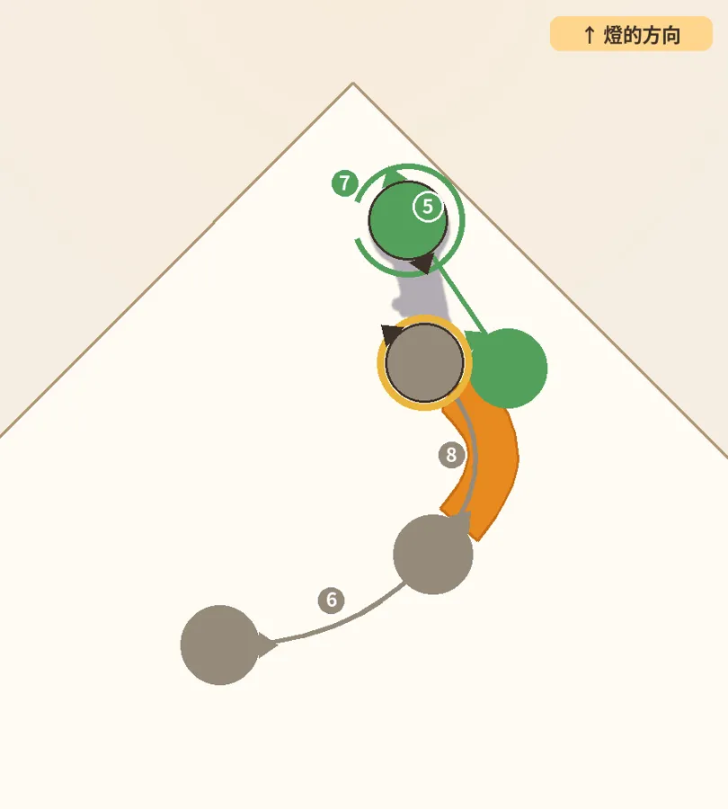
！好手 ？疑問手
第 1 回合（兔子先手）- 兔子 愚直
- 青蛙 右曲尺
- 兔子 愚直（愚直一徹）
- 青蛙 左柳（右昇龍，第 2 回合取得先手）
- 青蛙 愚直？
- 兔子 左柳
- 青蛙 轉身（一步轉身）
- 兔子 左曲尺！（左十三夜，踩影）
- 開局：愚直一徹不急於表態，落點依青蛙的動向調整，保留了第 2 回合從光座一側切入的路線。青蛙沿邊向光，換到先手，但也讓自己靠近邊界，下一回合的選擇變少。
- 疑問手 ⑤：一步轉身讓青蛙停在光座旁，影子朝兔子的方向伸出。在先手的情況下，這個規劃把位置交給了對手。
- 結論：兔子的十三夜從光座一側繞入，正好落在青蛙的影子上。守株待影成立的條件，是對手在取得先手後走出這類靠近光座、無法再調整的規劃。
另一種變化：不動轉身
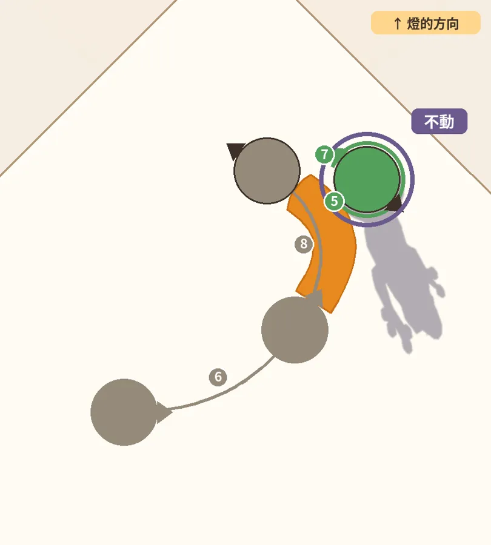
- ⑤ 宣告不動，直線取消、轉身照常執行，是一步轉身的正確應法。
- 青蛙留在原地，擋在十三夜的路線上。兔子 ⑥ 若不把落點移向光座一側就會撞上；避開之後也踩不到影子，攻勢不成立。
- 第 3 回合攻守互換。青蛙握有主動，兔子可走的路線所剩不多，且大多需要往左轉，動向容易被預測；兔子仍保有不動，是唯一的反擊資源。
打碁二｜黃雀啄影
中道開局 vs 向光開局｜守株待影的反擊
第 1 回合的進行與打碁一相同：兔子以愚直一徹走中道開局，青蛙以右昇龍沿邊向光開局。差別在於青蛙第 1 回合收步時的朝向，以及兔子對這個朝向的判斷。
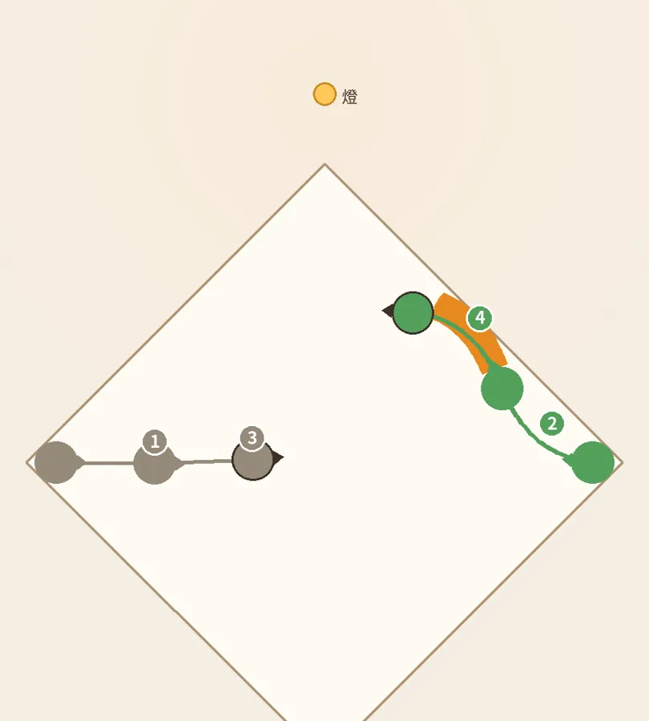
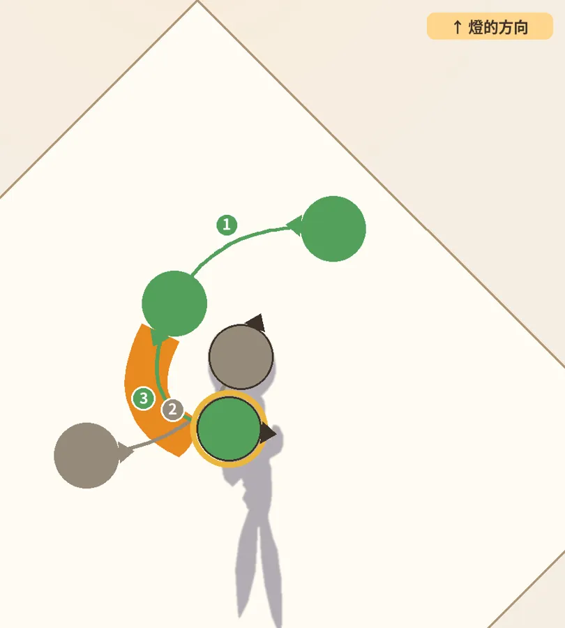
！好手 ？疑問手
第 1 回合（兔子先手）- 兔子 愚直
- 青蛙 右曲尺
- 兔子 愚直（愚直一徹）
- 青蛙 左柳！（右昇龍，收步時正對吽座）
- 青蛙 左柳
- 兔子 左柳？（規劃為左十三夜）
- 青蛙 左曲尺（左十三夜，踩影）
關鍵：青蛙第 ④ 步後的面向
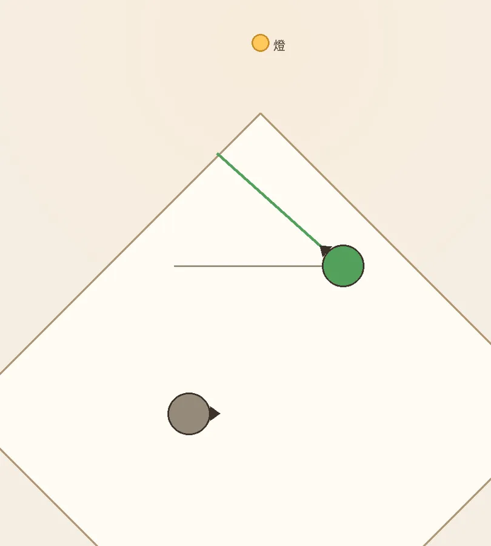
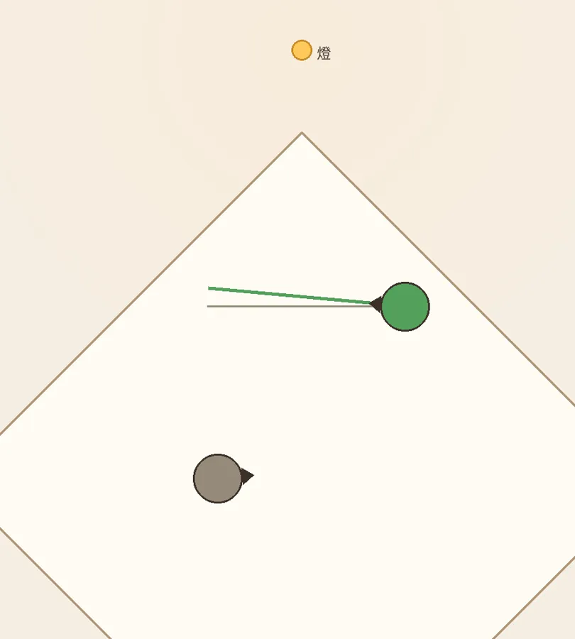
綠線是青蛙的朝向，灰線指向吽座。兩局青蛙收步的位置幾乎相同，差別在 ④ 的落點：打碁一落在弧線靠光座的一端，本局落在另一端，青蛙因此正對吽座。
- 好手 ④：青蛙收步時面對吽座。這樣一來，第 2 回合的十三夜剛好能繞到兔子背後。打碁一的青蛙停在差不多的位置，但面向光座，十三夜就繞不過去，只好改走一步轉身。
- 疑問手 ⑥：兔子沒注意到青蛙的朝向，照守株待影的老套路規劃了十三夜。先手的青蛙先一步完成同樣的走法，第 2 回合規劃一公開，兔子就已經被將死。
- 沒有退路：兔子就算在 ⑥ 用不動躲開，⑧ 的左曲尺模板還是會碰到青蛙的底座。
- 結論：第 1 回合結束時，除了位置，也要注意對手的朝向。青蛙面對吽座又是先手時，第 2 回合第一步別往光座那側轉，直走或往外側轉會安全得多。
另一種變化：兔子用不動
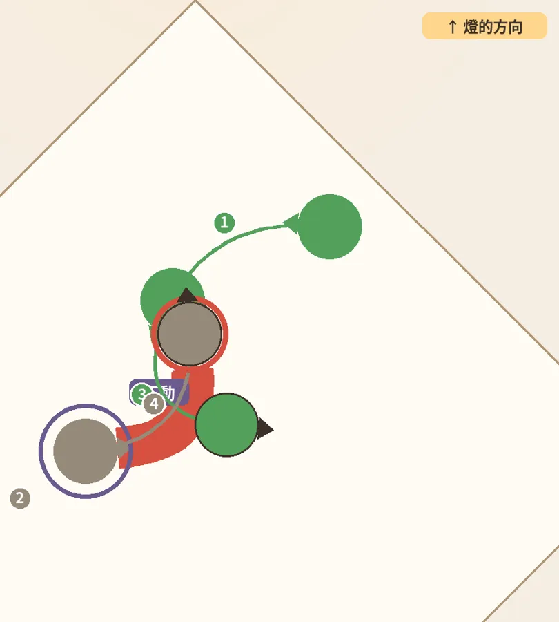
打碁三｜一念不動
中道開局 vs 向光開局｜有時候，踏出一步才有勝機
兔子以愚直一徹走中道開局，青蛙以右大蛇沿邊向光開局。兔子在第 2 回合搶到先手，第 3 回合卻在一念之間選了不動，錯過了近在眼前的影子。
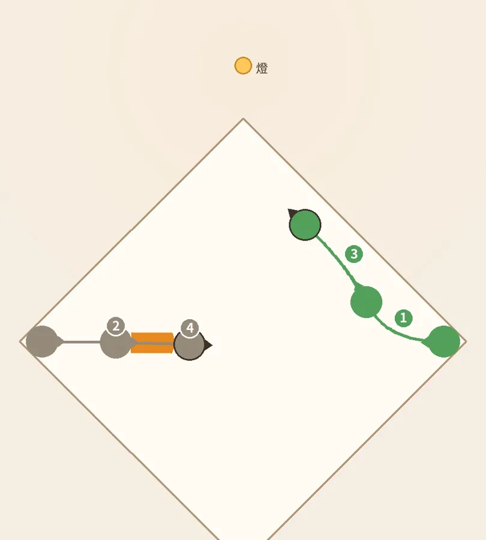
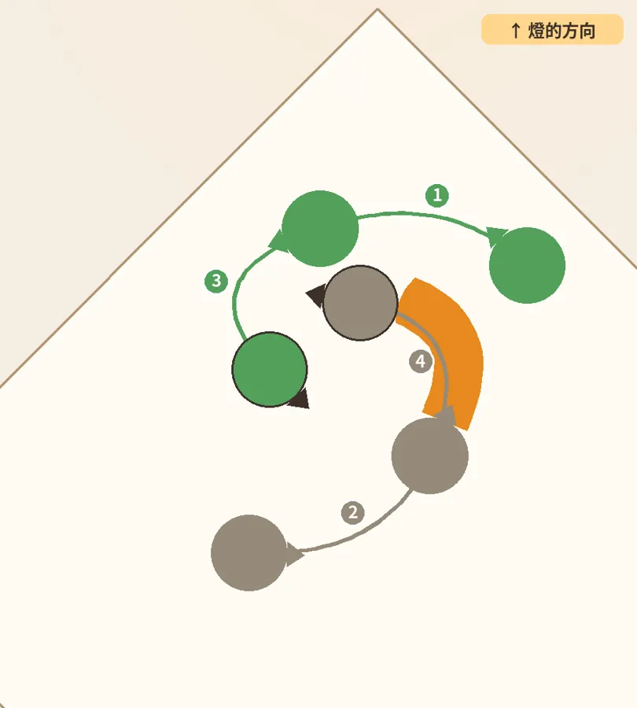
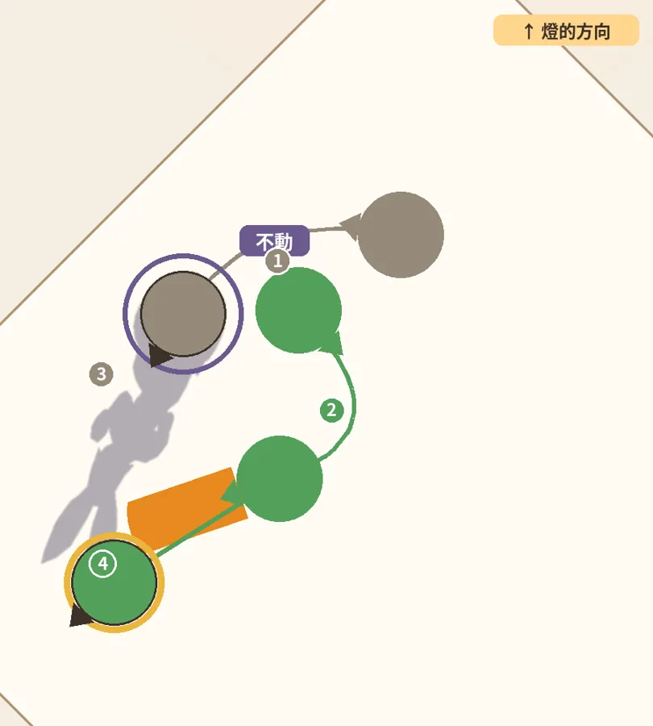
！好手 ？疑問手
第 1 回合（青蛙先手）- 青蛙 右柳
- 兔子 愚直
- 青蛙 左柳（右大蛇）
- 兔子 愚直（愚直一徹）
- 青蛙 左曲尺
- 兔子 左柳
- 青蛙 左曲尺（左半月反轉）
- 兔子 左曲尺！（左十三夜）
- 兔子 左柳
- 青蛙 右曲尺
- 兔子 不動？（規劃為左十三夜）
- 青蛙 愚直（右逆鍵，踩影）
- 好手 ⑧：兔子的十三夜邊轉邊往光座靠，收步時比青蛙更接近燈，第 3 回合拿到先手。
- 青蛙的右逆鍵：先用曲尺貼到兔子身旁，再一記愚直直刺。這個規劃本身殺不死兔子，但會逼兔子在 ⑪ 做選擇。
- 疑問手 ⑪：左曲尺的弧線大半會撞上青蛙，兔子於是按了不動。可是弧線最外側的尾端，剛好擠得進青蛙的影子。
- 原地就是靶心：不動讓兔子留在原處，而那裡正是青蛙下一步愚直瞄準的地方。
- 結論：不動能保命，卻也把自己留在原地。對手貼到身邊時，它的影子也近在眼前，有時候踏出那一步，才找得到勝機。
另一種變化：兔子走完左曲尺
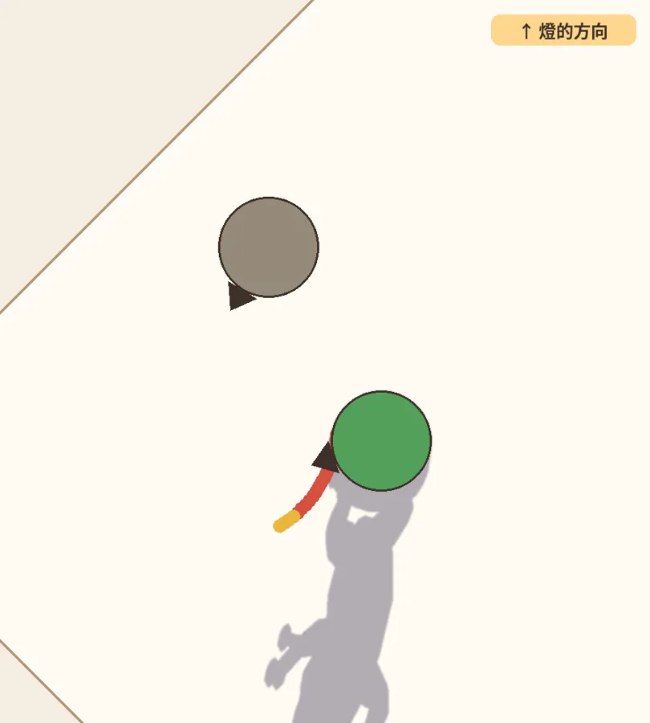